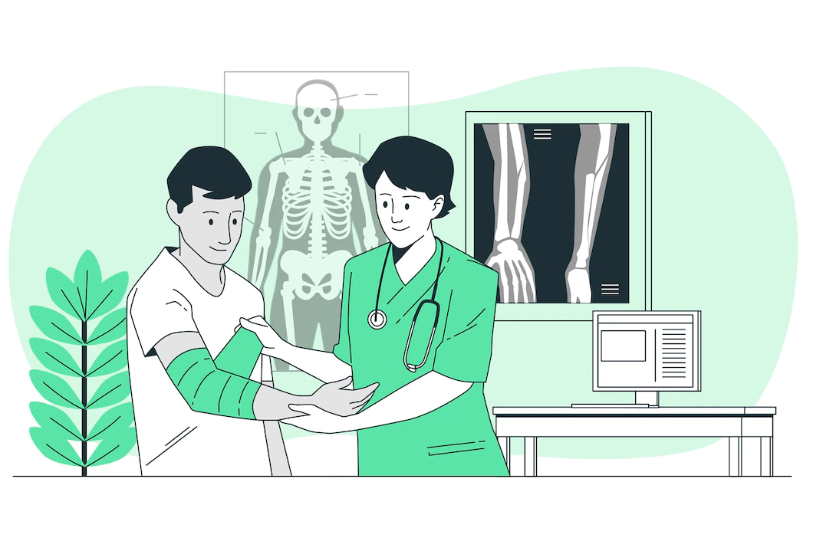

The Institutes are at the forefront in offering the latest in
Orthopedic treatments
and Orthopedic surgical advancements in India on par with the best centres in the world.
Our Orthopedicians trained at the top centres worldwide, bring with them the latest and best techniques and work in our facilities that have the latest cutting edge technology in terms of equipments, operating rooms, recovery areas and advanced Physical therapy facilities.
We have dedicated & well equipped Orthopedic surgery complexes with laminar flow & various modern equipment like image intensifier, operating microscope, computer navigation system, top of the line arthroscopy system etc.
Highlights
Clinix Hospitals offers key & best orthopedic surgeries and procedures in India. We perform bone and joint replacement surgeries which include the most current Arthroscopic and Reconstructive techniques. Joint replacements including hip resurfacing and knee replacement surgery [primary, complex primary & revision replacements] are being done in large numbers with excellent outcomes.
Shoulder surgeries and the most delicate hand micro surgeries are all performed with great precision and expertise.
Clinix Hospitals is also a pioneer in Articular cartilage Implantation (ACI). Cartilage regeneration surgery, including micro-fracturing, mosaic-plasty are all performed. The Clinix Cartilage School is leveraging developments in Orthobiologicals and growth factors to herald a new age of regenerative medicine.
There are dedicated units for Traumatology which involves treatment for dislocations and fractures with very minimal down time for the patient.
Our orthopedic surgeons will check for common orthopedic diseases and conditions of the patient and provide treatment based on the observation.
Orthopedic Oncology for treating bone cancers is also a key specialisation of our hospitals.
We are also one of the few hospitals having specialised Pediatric Orthopedics units offering the whole range of Pediatric Orthopedics.
Our Physical Therapy units provide rehabilitation and pain management and use sophisticated equipments and protocols to provide recovery in the quickest timeframe.